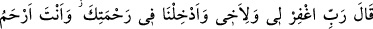
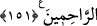

sevindirme. Bana hakaret etmekle onların arzuları gerçekleşmesin.
“eş-şemâtetü”, düşmanına isabet eden bir beladan dolayı sevinmek mânâsına gelir.
“el-işmât” ise düşmanı sevindirmek demektir. Düşmanı sevindirip kendisine güldürmek
her türlü beladan daha ağırdır. Onun için “Ölüm, düşmanı kendisine güldürmektan daha
hafiftir.” denilmiştir.
Hesâba çekerek veya kusurlu sayarak “beni bu zalim kavimle beraber tutma”
onlardan sayma “dedi.”
Ayetin işârî yorumu şöyledir: Kalb Harun’u, ruh Mûsâsı’nın kardeşidir. Düşmanlar ise
nefis, şeytan ve hevâdır. Zalim kavim ise dünya buzağısına tapanlar olup kalbin
sıfatlarıdır. Burada kalbin sıfatlarının değişebildiğine ve nefsin sıfatlarının rengi ile
renklenebildiğine işaret edilmiştir. Tarikat erbabından şuttar olan kimselerin
alışkanlıkları, ne söylediğini bilmemeleri ve ayaklarının kayması işte buradan
kaynaklanmaktadır. Kalbin kalb olarak, yaratılışında var olan Allah’a muhabbet duyma
ve O’na kavuşma arzusu değişmez. Ancak onun sıfatları değişebilir. Nitekim nefis de
nefis olarak dünyayı sevme ve onu arzulama özelliklerini kaybetmez. Ancak sıfatları,
emmârelikten sırasıyla levvâmeliğe, mülhemeliğe, mutmainneliğe ve Hakk’a dönüşe
doğru değişir. Bu sıfatlar, göz açıp yumânâ kadar nefsin eline bırakılırsa derhal ilk
hallerindeki tabiat ve yaratılışlarına geri dönerler. Bu, “Allah’ın öteden beri
süregelen kanunudur. Allah’ın kanununda bir değişme bulamazsın.” (el-Feth,
48/23)
151. (Musa da) Ey Rabbim, beni ve kardeşimi bağışla, bizi rahmetine kabul et.
Zira sen merhametlilerin en merhametlisisin! dedi.
Mûsâ (a.s.) “dedi ki: “Ey Rabbim,” işlediği kesin bir suçu olmadığı halde kardeşime
yaptıklarımdan dolayı “beni ve” kavmimi buzağıya tapmaktan engellemekte kusuru
varsa “kardeşimi bağışla.” Mûsâ (a.s.), kardeşini razı etmek ve ona gülen
düşmanlarının onu töhmet altına almaması için ondan hoşnut olduğunu göstermek üzere
kendisi için Rabb’inden bağışlanma diledi. Buzağıya tapanlarla savaşması gerekirken
savaşmaması sebebiyle istiğfara muhtaç olduğunu bildirmek üzere de kardeşi için
Rabb’inden bağışlanma diledi.
Mûsâ (a.s.) devamla: “Günahlarımızı affettikten sonra bize olan nimetlerini artırarak
“bizi rahmetinin içine al.” Haddâdî’ye göre bu cümlenin anlamı “bizi cennetine sok.”
demektir. “Merhametlilerin en merhametlisi sensin.” Bize bizden, babalarımızdan ve